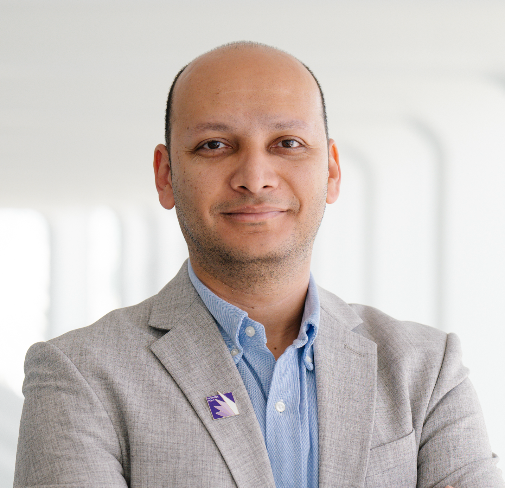

Dr. Karim Elish
Full Professor | Fulbright Specialist
Department of Computer Science
Florida Polytechnic University
Contact
BARC-2227, 4700 Research Way
Lakeland, FL 33805
Phone: +1 (863) 874-8646
Email: kelish at floridapoly.edu

Short Bio
I am a Full Professor in the Department of Computer Science at Florida Polytechnic University and Director of the NEXUS Research Lab, which focuses on secure, trustworthy, and intelligent software engineering through empirical and AI-driven research. At NEXUS, I have been fortunate to collaborate with and mentor students, including Fulbright scholars and graduate fellows.
Before joining Florida Poly, I held a faculty appointment as an Assistant Professor of Computer Science at Purdue University Fort Wayne. I am also a Fulbright Specialist, selected to the U.S. Department of State’s Fulbright Specialist Roster (2025–present). In 2018, I received the Florida Poly ABLAZE Award for Excellence in Teaching, recognizing exemplary pedagogical practices, teaching effectiveness, contributions to course and program development, and sustained efforts to foster students’ intellectual growth and critical thinking. I am a Senior Member of ACM and IEEE.
Education
- Ph.D. in Computer Science, Virginia Tech, Blacksburg, VA, USA, 2015
- M.S. in Computer Science, Virginia Tech, Blacksburg, VA, USA, 2011
-
 M.S. in Computer Science, King Fahd University of Petroleum and Minerals, Saudi Arabia, 2008
M.S. in Computer Science, King Fahd University of Petroleum and Minerals, Saudi Arabia, 2008
-
B.S. in Computer Science, King Fahd University of Petroleum and Minerals, Saudi Arabia, 2006
Research Interests
- AI/ML for security and software engineering;
- Software security and privacy, with a focus on mobile application security, malware and vulnerability analysis, secure code analysis, and automated security assurance; and
- Empirical software engineering, software analytics, and quality, including software metrics, code smells, bug localization, program analysis, and software testing.
Publications & NEXUS Lab
Publications
All my publications are available on my Google Scholar. Selected publications can be found here.
NEXUS Lab
I mentor student researchers through the NEXUS Research Lab. Meet our team →
Teaching
At Florida Polytechnic University, I teach a broad range of undergraduate and graduate courses spanning software engineering and cybersecurity. Over the years, I have designed and delivered courses that integrate hands-on practice, current technologies, and effective teaching methods. My teaching portfolio includes:
Undergraduate Courses
- CEN 4033Secure Software Engineering
- CEN 4088Software Security Testing
- CIS 4369Web Application Security
- CEN 4010Software Engineering
- CEN 4065Software Design and Architecture
- COP 4656Mobile Device Applications
- CEN 3820Systems Analysis and Design
- COP 3710Database I
- COP 3330CComputer Programming 2
- COP 4934Senior Design 1 (Capstone I)
- COP 4935Senior Design 2 (Capstone II)
Graduate Courses & Thesis
- CEN 5035Advanced Software Engineering
- COP 5727Advanced Database Systems Design
- CEN 5088Advanced Software Security Testing
- IDS 5970Thesis 1
- IDS 5975Thesis 2
Selected Service
Leadership & Editorial Service
Conference Service
Journal & Grant Reviewing
- IEEE Transactions on Software Engineering (TSE)
- ACM Transactions on Software Engineering and Methodology (TOSEM)
- IEEE Transactions on Information Forensics and Security (TIFS)
- IEEE Transactions on Dependable and Secure Computing (TDSC)
- International Journal of Information Security
- IEEE Transactions on Mobile Computing (TMC)
- IEEE Systems Journal
- Journal of Information Security and Applications
- IEEE Transactions on Intelligent Transportation Systems
- Computers & Security
Cybersecurity Education Program, National Science Foundation (NSF)